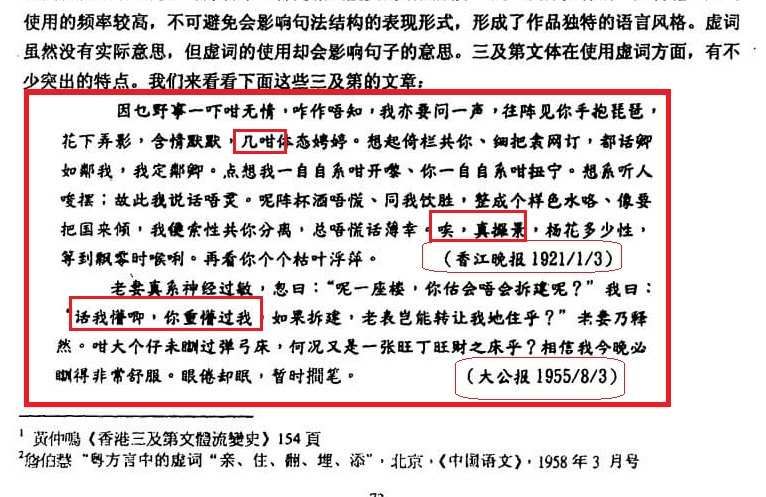
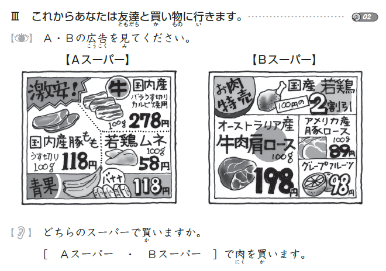

半年日语从五十音到N2合格学习经验录
我总共参加了两次 JLPT 考试：
2019 / 07/07 JLPT N4：不合格
2019 / 12/01 JLPT N2：合 格
考试地点：日本关东区东京都内考场
前言
本篇文章分享了以零基础起步，我在半年时间内通过 JLPT N2 考试的学习路线。首先，我要给日语初心者们打一支强心针：你能在考卷上体验到日本人的一板一眼。因为，我在考卷上遇到的内容，都是教科书上曾学习过的知识点。换句话说，只要踏实地把教科书上的知识点和习题按部就班地学习再复习，N2合格绝对无忧。
入门准备
我使用的教科书是《できる日本語》初级（红）、初中级（黄）和中级（蓝）。
五十音与简单句
我学习五十音的思路是这样的：就像小狗只能汪汪叫，猫咪只能喵喵叫。人受制于其发音器官，不论说哪种语言，最基本的还是离不开aeuoe这样的元音，bpmfgk这样的辅音，和元音拼辅音如ba/mao/ku/qi的组合音。只是不同的语言，会用不同的符号（字）去表现这些发音。
所以学习五十音，最重要的就是心态放松，把假名（日本的字母）看眼熟了，记得大概的发音是什么，就可以去学习基本的简单句了。
学习简单句的过程，也是复习和熟悉五十音的一个手段。
例如，
１．あいしてる。
２．やめてください。
３．これもたべたいです。
简单的三句话，你就掌握了17个日本字母，足足三分之一的片假名！在这里，我推荐NHK的 简明日语 | NHK WORLD-JAPAN。这里面的日常问候语，和课堂、银行、超市用语，不仅实用，还常能在综艺等作品中听到。掌握这些常用语，能大大建立你学习日语的自信心与成就感。
重视汉字的读音
虽然日语里有许多汉字，与中文意思一模一样，像「会議-会议」，「電車-电车」 「禁止-禁止」，但是请不要因此在学习的时候就抱着轻视的心情偷懒，因为特别对于N2N1这种有难度的考试而言，汉字是一定会出多道考题的。以下是我学习汉字时的注意点：
不要先入为主，见字识意，例如
娘（むすめ）是女儿，而不是母亲。
手紙（てがみ）是信纸，而不是纸巾。
等等…留意读音特别的地方，例如
促音 –> 結婚（けっこん）・喫茶店（きっさてん）…
长音 –> 空気（くうき）・空港（くうこう）…
浊音 –> 手紙（てがみ）・鍵（かぎ）…
半浊音 –> 妊婦（にんぷ）・散歩（さんぽ）…
拗音 –> 電車（でんしゃ）・醬油（しょうゆ）…中日汉字写法是有差别的，例如
重视日语汉字的本土音，也就是训读音。所谓汉字训读和音读，了解过韩语的朋友，应该有听说过“训民正音（教训百姓的正确而规范的标准音）”，日本汉字的训读音，也同此义，即日本本土的标准音。站在中国人的角度，这是很容易理解的，例如旧时以广府话为母语的人，说“你好”一词的发音是本土训读的“nei5 hou（雷猴）”，直到学习了中国现代汉语的标准语以后，才掌握其国语音读“nǐ hǎo”。
 旧时交通不便，虽然同属中文，不同地区却各有其特色本土语言
回到日语汉字的学习，在汉字传入日本之前，日本人并无自己独有的书写系统，多只停留在口头对话交流，而他们在交谈时使用的原生态发音，就是训读音。常见于动词，或植物。例如
【名】 桜（さくら）・魚（さかな） ・時（とき）・金（かね）
【動】 食べる（たべる）・言う（いう）・整う（ととのう）
等等…
在这里，我推荐教科书《漢字たまご》，里面搭配了许多日本本土生活化的学习素材与场景，相当易读与实用。

以上四点，是我认为日语初心者学习汉字时必须有备于胸的。在听读学习素材时，务必主动留意并摘抄记录在笔记里，作复习记忆。
阅读与听力，比起刷题，你更需要做课本练习题。
教科书的音源可以在ダウンロードセンター｜アルク (alc.co.jp)获取，虽然素材之多，琳琅满目。但是对于想要在半年时间里通过N2的人，请不要被这种信息耗散自己的精力，谨记着只需要跟着教科书的课文来听写和朗读背诵，掌握个中单词，文法，和应用法，就完全足够了。如果需要拓展素材，我更推荐场景日语，你可以尝试角色扮演其中的人物，刺激自己对日语长句的熟悉度。
为什么会有动词变形（動詞の活用）
很简单，就是为了在一个句子里表达更多的信息。请看以下中文简单句：
我已经吃饭了。
这个句子包含的信息有：
- 我（主语，主动做动作的人）
- 已经…了（固定搭配，时态）
- 吃（动作，动词，谓语）
- 饭（宾语，被动作的对象）
同样的信息，如何用日语表达呢？
私は、ご饭を食べました。
这个句子包含的信息有：
- 私は（主语，主动做动作的人）
- ご饭を（宾语，被动作的对象，を后一定跟动词谓语）
- 食べました（动作，动词，谓语，固定搭配，时态）
由此说来，那日语和英语的动词一样，改变词尾就可以表示不同的时态信息。edーました、ingーています。然而，除了时态，还有被动，否定、状态、命令、连接等信息，这就需要不同的词尾变化来表示。
那么怎么变？幸运的是，日语动词变化是有绝对规则的。初心者需要了解的内容如下：
- 日语动词，它的普通形结尾一定属于う段。
例如食べる・言う・遊ぶ・頼む・行く …
- 日语动词，它的普通形结尾一定属于う段。
- 根据动词变形规则的不同，动词分为3种类。
グループ1の動詞，类别一组动词
グループ2の動詞，类别二组动词
グループ3の動詞，类别三组动词
- 根据动词变形规则的不同，动词分为3种类。
- 什么是 「グループ1の動詞」？
ます形时，ます的前面的字母是属于「い段（い、き、し、ち、に、び、み、り）」的动词。
例如：飲みます・取ります・行きます。
- 什么是 「グループ1の動詞」？
- 什么是 「グループ2の動詞」？
ます形时，ます的前面的字母是属于「え段（え、け、せ、て、ね、べ、め、れ）」的动词。
例如：たべます・ねます・行きます。
- 什么是 「グループ2の動詞」？
- 什么是 「グループ3の動詞」？
第三类动词就只有两个，一个是「します」，另一個则是「来ます」。
例如：勉強します、サッカーします。
- 什么是 「グループ3の動詞」？
- 各种变形的意义
① て形(连接词，未完)
② た形（过去，完成）
③ ない形（否定）
④ 使役形 させる形（要求别人做，命令别人做）
⑤ 被動形られる形（被动，例如被老师骂了，先生に叱られました）
⑥ 可能形えます/できます（可以，能够）。请注意，日语汉字中的可能，意思是可以（100%），与中文的可能（也许，不确定）相反。
- 各种变形的意义
请不要被变形的数量吓到，首先「て形」和「た形」的变形规则是一样，其次，除了第一组动词，其他组动词的变形不需要原形变化，直接在词尾去う段补形体就可以，容易掌握。实际上初学者在教科书上最先接触的只是「て形」，随着课本难度的增加，才会陆续学习到其他种类的变形。因此，请以一颗平和而专注的心，按照教科书的要点提示与课后习题，逐一把他们反复练习，直到掌握。
在这里，我推荐以下网站，
结束语
以上，是我总结的关于初心者想要半年通过日语N2考试应该了解的学习思路。当然，具体的知识点还有很多，所幸都可以在互联网上查找到相关资料。所以即便基础不多，也大可卸下“日语很难”的防备心，选择一个自己熟悉的方向开始，通过结合教科书不断的练习与复习，一定可以速度通过JLPT考试。